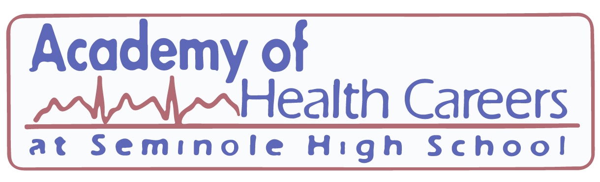

STEM Curriculum
Standard Graduation Diploma Requirements:
Administration
Technology Usage:
Seminole County Public Schools believes technology is a valuable educational tool. All classroom teachers use technology as an instructional tool, such as use of the Internet to access encyclopedias, magazines, the district’s media/library catalog, websites for educational projects, on-line district and state classes also to conduct research in preparation for a project or presentation.

IB Program:
The International Baccalaureate Program at Seminole High School is an officially recognized affiliate member of the International Baccalaureate Organization. The International Baccalaureate Diploma Program is a demanding pre-university course of study that is designed for highly motivated secondary school students between ages 16 and 19. The program has earned a reputation for rigorous assessment, helping IB diploma holders access the world’s leading universities.
Curriculum
The International Baccalaurate Programis a rigorous pre-university course of study, leading to internationally standardized examinations. The program is designed as a comprehensive two-year curriculum that allows its graduates to fulfill requirements of many different nations’ education systems.
IB Coordinator
Mr. Carson Stone’s responsibilities include co-managing IB Juniors’ CAS, a component of the IB diploma that requires students to complete creativity, action, and service, registering IB students for Standard Level and Higher Level exams, and meeting with current and potential IB students and parents.
 Biology students are hard at work with hands-on labs.
Biology students are hard at work with hands-on labs.

Health Academy:
The mission of the Academy of Health Careers at Seminole High School is to afford students a rigorous interdisciplinary instructional program that ensures relevant preparation for entry in the health care industry and to pursue health careers at the post-secondary level upon graduation. The mission is achieved through a strong partnership with the health industry, community, and with institutes of higher learning. The Healthcare system requires many talented individuals to lead the way in health interventions.
Program Features
Michael Hennessy
Michael is the Health Academy Administrator, recently graduated from BLAH BLAH BLAH SHOULD WE ADD INFO HERE?????.
Mass Media:
The Mass Media CAPE Academy at Seminole High School has expanded to include Web & Digital Design, Microsoft Business Applications, Programming, Video Production, Newspaper and Yearbook. The purpose of this website is to assist parents and students to review these outstanding programs and choose the course path that is the most beneficial for the student’s future careers and education. All courses offer either Adobe or Microsoft industry certifications. Many other benefits to these programs include potential scholarships, college credits, certifications, designations, student portfolio development, as well as advanced career training.
Veronica Sarmiento
Veronica has an extensive amount of experience and training in art, technology and design, She has ten years of teaching experience as well as industry experience in graphic design and project management. When with Burdines/Macy’s she worked with the advertising department to provide software support and troubleshooting for the entire department including the in-house digital photography studio, image library, pre-press department, in-house broadcasting department, and administrative users such as account executives and media buyers.
Renee Dubber
Renee is a national Board Certified teacher who has been teaching in the Florida Public School System for the past 17 years working primarily with Title 1 schools and at risk youth. Prior to teaching she worked in corporate marketing and has continued to do contract work for various businesses while teaching. She is a certified Microsoft Office Specialist and brings a great deal of technology experience to the program. Her extensive work with at risk youth, combined with her teaching experience and numerous certifications, make her an asset to the Mass Media CAPE Academy.
Kevin Kelley
Kevin is a professional musician who brings a great deal of experience with graphics and print media to the team, He owned a direct mail marketing company and has a vast amount of technology experience with web design, graphics and programming. His varied experience in the arts and business, as well as teaching experience, is an asset to the program.
Kevin Strileckis
Kevin is a first year teacher, recently graduated from the University of Central Florida. He studied English and computer science, and has been programming for eight years. He combines these subjects, often working on linguistics projects. He also usually designs all assignments for his students. He considers this an important way of keeping in practice in the various languages he programs in (C++, Java, C#), and so to have complete control over and knowledge of what his students are learning and, for the larger projects, to show them what is possible with programming knowledge.
Mike Smith
Mike is a career professional in the television industry. His extensive industry accomplishments include being a producer, editor, news cameraman, chief photographer and videographer. He primarily worked for ABC and CBS affiliates throughout the county. He has developed an outstanding program for our SHS students for over fifteen years that combines his expertise and his passion for education.
Ginger Schmaus
Ginger holds her degree in journalism from the University of Central Florida and is certified in English grades 6-12, Business Education, and Elementary Education K-6. She advises the student-run publication, The Seminole Newspaper. She brings to Seminole High 20 years of real-life experience as an editor in the book publishing industry. Her expertise is in content editing, copy editing, research, proofreading, and the final stages of publication for hard print material. She loves to teach and see students reach their potential.

Advanced Placement:
The College Board’s Advanced Placement (AP) program is a nationwide program consisting of over 30 college level courses and exams in subjects ranging from art to statistics offered at participating high schools. Studies have shown that students, who complete a solid academic core, including advanced courses, are more likely to be successful in college. Many school counselors have found that AP courses provide the challenging content necessary to engage all types of learners.
Sample Courses
Math
Science

Extracurriculars:
Science National Honor Society
Science NHS is a prominent scientific organization that will engender a new group of young thinkers who will be the future of industry, research, and scientific exploration for America. The Seminole High Science NHS is organized into 8 distinct scientific committees which are as follows: chemistry, biology, computer science, physics, psychology, environmental science, health science, and STEMpowerment. Science NHS members have numerous opportunities to explore their scientific endeavors through these committee workshops held throughout the year. Members can learn to program a mobile app, conduct a forensics lab, practice how to do hands-only CPR, and be apart of a short term memory loss experiment. Science NHS embraces all there is to offer in the field of science. To uphold good standing within the chapter, all members are required to document and submit to the secretaries: 90 minutes of science tutoring, 4 hours of science experience, and 10 hours of community service.